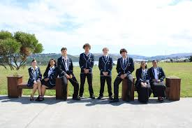

Aotea College's Senior Attendance Tracker
To help you improve your attendance, make your classes more enjoyable, and to get help in your subjects.


Aotea College, Te Kareti o Aotea, is a large, urban co-educational secondary school located in Porirua City. The college caters for students from year 9 to 13 and serves a growing and diverse community.
Aotea College’s strategic priorities for improving outcomes for learners are to further:
- student engagement initiatives in curriculum and co-curricular programmes to personalise learning, including the use of learning partnerships beyond the school
- curriculum development implementation of qualification changes, and Te Mana Ōrite mo te Mātauranga Māori.
You can find a copy of the school’s strategic and annual plan on Aotea College’s website.
ERO and the school are working together to evaluate:
- how effectively changes the school makes to its NCEA curriculum create conditions for learning in which the aspirations and identity of learners and whānau form the basis for a pathway to success.
- how the Poutama Reo resource and evaluation tools can support Te Mana Ōrite mo te Mātauranga Māori.
The rationale for selecting these evaluation foci are to:
- enable the school to keep its multicultural character and broad curriculum at the core of its response to NCEA and other external curriculum changes
- further support learners to gain qualifications and rich experiences reflective of who they are and who they can be
- take the next steps as a school to ensure that students, staff and whānau can move forward in ensuring that te Ao Māori and the Māori language is a known and valued part of the shared identity in Aotearoa New Zealand.
The school expects to see:
- continued success in student engagement and achievement at all levels
- successful implementation of NCEA changes and te Mana mo te Mātauranga Māori.
Strengths:
The school can draw from the following strengths to support its goal to respond collectively to change as a school and community, creating a curriculum and conditions for learning in which all learners can build on their aspirations and identity as a pathway to success:
- an inclusive learning climate that is positive and promotes engagement through well-organised systems, effective teaching, a broad and responsive curriculum, collaborative teamwork and ownership of the progress of all learners
- a history of responding positively and successfully to learners’ diverse needs
- high levels of professional capability enacting the school vision, values and priorities
- school leadership who are active in sustaining educationally powerful learning partnerships including an engaged community of whānau, hapu, iwi, parents, students and contributing schools in a Kahui Ako.
Where to next?
Moving forward, the school will prioritise:
- a continued focus on culturally responsive practice within curriculum development
- leading NCEA changes across the curriculum, the refreshed curriculum and new standards to continually improve and innovate to promote equitable achievement outcomes for all learners
- continuing support for teacher professional learning for Te Mana Orite mo te Mātauranga Māori in curriculum and pastoral initiatives
- development and implementation of Te Reo Māori Progressions using Poutama Reo as an evaluation tool.
- ERO’s role will be to support the school in its evaluation for improvement cycle to improve outcomes for all learners. ERO will support the school in reporting their progress to the community. The next public report on ERO’s website will be a Te Ara Huarau | School Evaluation Report and is due within three years.